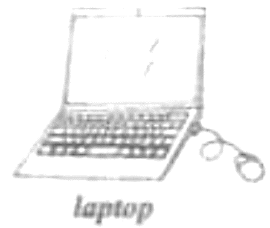

2021年北京市中考英语试题 · 阅读表达 第34、35、36、37、38题
四、阅读表达（每题2分,共10分）
阅读短文,根据短文内容回答问题。

Screen-Free Days
I remember the first time I suggested screen-free days in our school to some of our student leaders. Jokingly, I said to the group, “What do you think if we go a week without using our laptops or smartphones?”
They laughed, and one of them said, “No way, Mr. White. They would be too much.” I could feel their worry, and told them that I was only considering single screen-free days. Even that idea left them feeling upset.
According to a survey we did, most students in our school spend about six hours a day on screens. Many of my students start their day by checking their smartphones. I often see them looking at their phones when getting off the bus or at parents’ drop-off, they can’t use their own “screens” at school. They usually work on computers at school for at least two hours during the day.
It’s clear that our students spend a lot of time on screens. We do see the benefits of technology. However, we teachers also want to make sure that students have balanced learning and social experiences away from their screens. That’s why we have come up with the idea of screen-free days.
During the course of the year, we have built in several screen-free days that require us to make different plans for our students about how they will communicate with one another and the world around them without “screens”. For some teachers, this means bringing back a valuable lesson plan that has been put off for some time because it is “out of date”. Others have designed something completely new.
Fun activities, for example, card games and room escape(密室逃脱) games, are organized at school. In these activities, students socialize without smartphones and have face-to-face communication without checking on “likes” they’ve got online. These fun activities also make it possible for the whole grade to enjoy the company of their friends with no smartphones.
After our first screen-free day, students mentioned that they were surprised they enjoyed it. Finding ways to help our students connect with one another is important.
While technology is already part of our world, it shouldn’t play such an important role in a learner’s life.
34. How many hours do most students in the school spend on screens every day?
35. Why have the teachers come up with the idea of screen-free days?
36. What fun activities can the students have at school?
37. How did the students feel after the first screen-free day?
38. What do you think of the idea of screen-free days? Why do you think so?